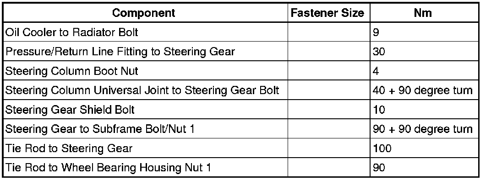
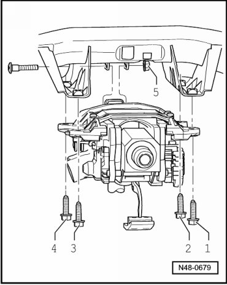
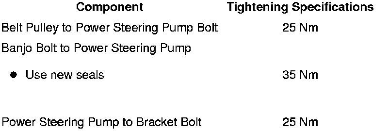
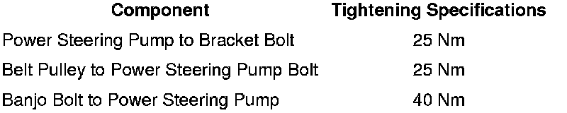

Steering
Fastener Tightening Specifications

• 1 Always replace
Steering Column Bolt/Nut Tightening Sequence and Specifications

- Tighten bolts - 1 through 4 - in the sequence shown to 20 Nm.
- Tighten nut - 5 - to 20 Nm.
Power Steering Pump Tightening Specifications, 3.0L Diesel Engine

Power Steering Pump Tightening Specifications, 3.2L, 3.6L and 4.2L Engines
